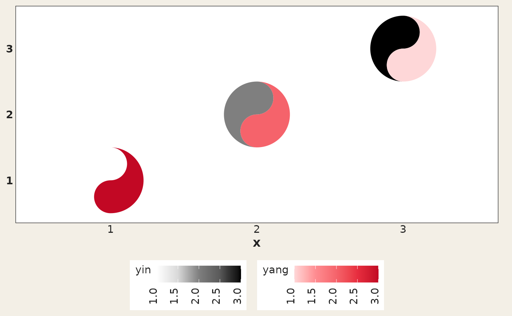

A light theme tuned for the taichi grid: it bottoms the legends, drops the panel grid and axis ticks, and gives the canvas a soft off-white background reminiscent of rice paper.
Usage
theme_taichi(
base_size = 11,
base_family = "",
base_line_size = base_size/22,
base_rect_size = base_size/22
)Value
A theme object that can be added to any
ggplot, in the same way as theme_bw().
Opinionated choices
Two of the theme's settings surprise people often enough to be worth
spelling out. The y axis title is blanked, on the assumption that the
y axis of a taichi grid is a list of category names that already reads as a
label — so labs(y = "...") has no visible effect under this theme.
Legend text is rotated 90 degrees, which keeps a wide continuous legend from
running off the bottom of the plot. Both are ordinary theme elements, so add
a theme() call afterwards to put them back:
+ theme_taichi() + theme(axis.title.y = element_text(),
legend.text = element_text(angle = 0))Examples
library(ggplot2)
d <- data.frame(x = 1:3, y = 1:3, yin = 1:3, yang = 3:1)
ggplot(d, aes(x, y)) +
geom_taichi(yin = yin, yang = yang) +
theme_taichi()
